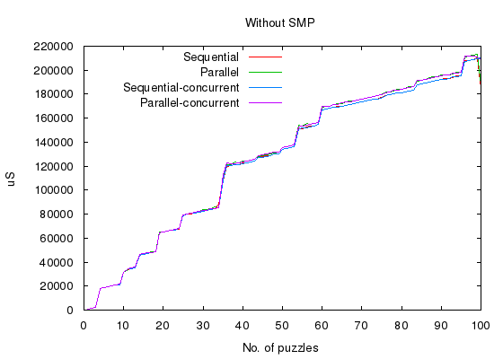
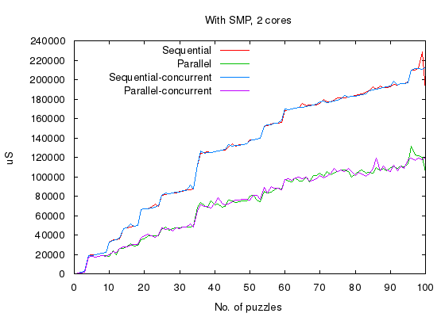
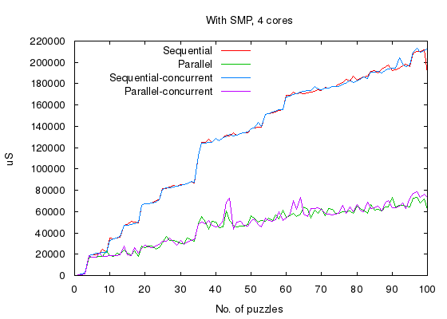
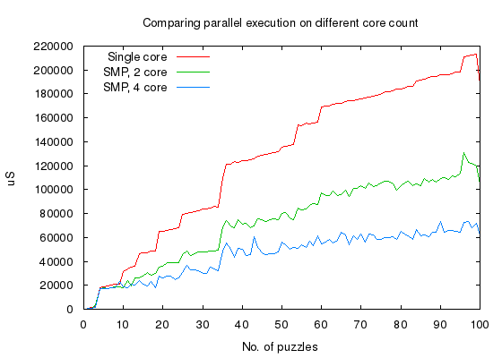
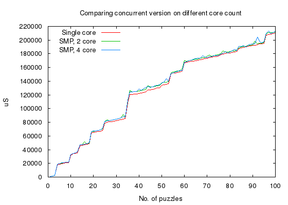

For past three decades semiconductor industry promised to double the speed of microprocessor every two years, and they did keep to their promise. Now, it looks like they have exhausted all the available tricks and the only way to increase computation speed is by going parallel - packing more number of cores in the same die. But that ain't so easy, for it requires re-designing our algorithms to run parallel. Enter concurrent programming. Erlang is one such language that encourages concurrency.
Concurrent programming is a paradigm of writing computer programs that can execute in parallel. Three decades of structured programming concepts popularized by languages like C and Java have made the entire ecosystem of computer applications optimized for sequential programming. Now, even when we are ready to redesign our algorithms for concurrency, its implementation, testing and deployment are making life difficult for us. The general focus on Erlang here is that it may save us from some of those difficulties. Let us experiment couple of scenarios using sudoku. There is a separate article describing the algorithm and why it will make sense in this context. Source code for the same can be found in github. You can find more details on how to use the sudoku script there, that we will using it here.
Now, let us have some fun.
# solve a single sudoku puzzle of complexity 3 (9x9) and difficulty 40%
$ bin/sudoku -c 3 -d 40 -s 1123
complexity:3 count:1 difficulty:40 seed:1123
Time taken to evaluate 6329uS
Above, sudoku script generates a 9x9 puzzle, populating 40% of the slots. And it took 6.3 milliseconds to solve the puzzle. The -s option provides seed value to the random-generator - so that same set of puzzles will be generated for the same seed value. Note that the puzzle is solved using a sequential backtracking algorithm explained above.
All measurements are taken with my 2GHz Core-2 Quad desktop.
Using the same parameters but solving 100 puzzles - sequentially,
# solve a single sudoku puzzle of complexity 3 (9x9) and difficulty 40%
$ bin/sudoku -c 3 -d 40 -s 1123 -n 100
complexity:3 count:100 difficulty:40 seed:1123
Time taken to evaluate 1182004uS
took about 1.2 seconds ! On an average, this algorithm takes about 12 milliseconds to solve a puzzle. Note that we used a pure-sequential version of the algorithm for this measurements.
simple concurrency with erlang
Before we transform the algorithm into a concurrent one, we will try to measure how simple-concurrency, like what we see with web-servers serving simultaneous requests, fair with erlang. The objective here is to solve large number of puzzles - first, sequentially one after the other - next, simultaneously spawning one process for each puzzle. Thus we measure its scalability and efficiency.
For the sake of clarity let us define the terms - sequential, parallel and concurrent, used in this article.
- sequential,
- sequential version of algorithm that uses single core, even if more than one core is available.
- parallel,
- sequential version of algorithm used to solve more than one puzzle simultaneously. Although each puzzle will utilize single core, more number of puzzles can be solved simultaneously thus utilizing all the available cores.
- concurrent,
- concurrent version of algorithm where each puzzle utilizes all the available cores.
We will run the same script with few more switches, and SMP disabled.
$ bin/sudoku -c 3 -n 100 -d 40 -s 1123 -benchmark # SMP disabled
Above command generates 100 puzzles of complexity 3, 9x9 sudoku table, populating 40% of the slots. Same seed value will generate same set of tables. The script outputs five columns,
- 1st column, no. of puzzles solved.
- 2nd column time taken to solve sequentially.
- 3rd column time taken to solve puzzles simultaneously, one erlang-process for each puzzle.
- 4th column same as 2nd column, except that concurrent version of algorithm is used.
- 5th column same as 3rd column, except that concurrent version of algorithm is used.
bin/sudoku was executed in SMP disabled mode by adding the following header in the beginning.
#!/usr/bin/env escript
%% -*- erlang -*-
%%! -smp disable
Let us now plot the data with gnuplot,
Again, the script is executed with same switches but with two cores enabled. Replace -smp disable with +S 2:2 in the script header. A similar 5-column output is generated and plotted below,
Once again, the script is executed with 4 cores enabled, that is, using the +S 4:4 switch and plotted below,
We can easily observe that,
- Whether simple concurrency or concurrent-backtracking version, there is virtually no overhead introduced because of concurrent execution.
- Both simple concurrency and concurrent-backtracking version can linearly scale with number of cores.
When performance of parallel execution is plotted on single-core, 2-core, and 4-core variants,
we can observe that simple concurrency scales linearly with number of cores.
When performance of concurrent algorithm, executed one after another in sequential mode, is plotted on single-core, 2-core, and 4-core variants,
shows that there is no improvement of using a concurrent version of the algorithm and neither a overhead of using it.
Let us now apply simple concurrency and concurrent backtracking algorithm for a pathological sudoku combination and measure its performance on different core-counts.
how does it perform for pathological cases ?
I have added two puzzle files priv/long3.term and long4.term, both having a pathological case.
First we will solve the pathological case with sequential version,
$ bin/sudoku -f priv/long3.term # SMP disabled
Time taken to evaluate: 3988177uS # 3.9 Seconds
Then with concurrent version, on different number of cores.
$ bin/sudoku -t -f priv/long3.term # SMP with 4 cores
Time taken to evaluate: 195572uS # 195 milliseconds
$ bin/sudoku -t -f priv/long3.term # SMP with 2 cores
Time taken to evaluate: 415335uS # 415 milliseconds
$ bin/sudoku -t -f priv/long3.term # SMP disabled
Time taken to evaluate: 1078302uS # 1 second
-t switch enables the concurrent mode, we can see that between 4 cores and 2 cores there is 2x improvement because the concurrent logic is making use of the extra cores. But what will surprise us is that,
concurrent version performs 4x better even on a single-core. And with 4 cores, performance improves to 20x. How does that happen ? welcome to swarm algorithms !!
swarm algorithm
A backtracking algorithm becomes a swarm algorithm when it explores as many path as possible simultaneously, thus it avoids spending time on bad bath. In many cases the number of steps in a backtracking algorithm is not more than couple of hundred, and we find that, given enough execution time for the good path it gets completed quick enough. Note that swarm algorithm does not remove the exponential complexity of backtracking logic - but it gives a great deal on performance.
This experiment might also teach us that concurrent programming is not just about multiple cores.
Long ago, I wrote a similar Sudoku puzzle solver in C / Linux, but the best part of writing it in Erlang is the way it prompted me to re-design the algorithm for concurrency. In C, I would have never thought of spawning a new process for every choice it makes, but here it was only natural.
That is how a language can affect our creativity, be it for programming or for poetry. And it is those simple and unassuming things that changes one's perspective.
{kind=link}
{kind=link}
{kind=link}
{kind=link}
{kind=link}